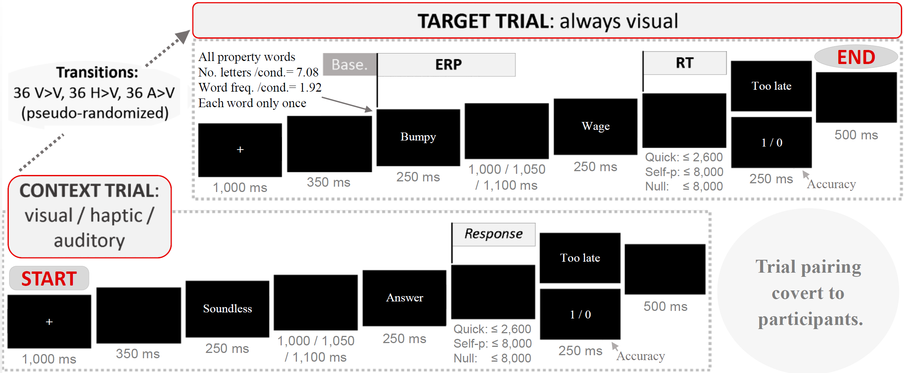

Event-related potentials: Why and how I used them
Event-related potentials (ERPs) offer a unique insight in the study of human cognition. Let's look at their reason-to-be for the purposes of research, and how they are defined and processed. Most of this content is based on my master's thesis, which I could fortunately conduct at the Max Planck Institute for Psycholinguistics (see thesis or conference paper).
Electroencephalography
The brain produces electrical activity all the time, which can be measured via electrodes on the scalp—a method known as electroencephalography (EEG). These pulses are produced for every one of our states and actions, in a voltage at a micro (µ) scale, typically between 10 µV (0.000010) and 100 µV (0.000100; Aurlien et al., 2004). The overlapping pulses happen at extremely high frequencies; indeed, the signal can be measured once per millisecond. The high frequency of this signal is very interesting for the study of some cognitive processes in particular, for which the time course is (or may be) critical. One such example is conceptual processing, namely, the process of understanding the meaning of words.
Research has revealed the relation between certain EEG patterns and cognitive states and functions. Brain activity includes dozens of types, but broadly, it can be divided into neural oscillations and event-related potentials. Specific oscillations (also known as brain waves) are associated with states such as wakefulness, sleep, arousal, relaxation, etc. (Roohi-Azizi et al., 2017). Event-related potentials instead represent more finite events, such as the presentation of as a stimulus. In cognitive neuroscience, both oscillations and ERPs are studied, whereas in cognitive psychology, ERPs are much more common than oscillations. Let's dive into ERPs below.
Event-related potentials
In the lab, ERPs are elicited using controlled designs. In each trial, a series of stimuli are presented. At a fixed point therein, an EEG measurement begins and spans for a certain period. In turn, in the analysis, this measurement period is divided into time windows, which often correspond to specific ERP components (e.g., N400 window).
In psycholinguistics, for instance, a typical scenario is the presentation of words, and ERPs are systematically time-locked to the same position in consecutive trials, often the onset of a word. By this means, the experimental manipulation is collected, and the non-experimental variation—‘noise’—is largely cancelled out by the aggregation of multiple trials that share the experimental manipulation.
The chief reason to employ the ERP method is the measurement of cognitive processes online, that is, precisely as they unfold. This is fitting in the context of language comprehension, where some important processes last for less than a second.
Time course of word processing
Processing a word takes around 800 milliseconds (ms). Within that time, earlier processes (compared to later ones) have been ascribed greater relevance to the core process of understanding a word (Mahon & Caramazza, 2008). This assumes that broader processes start only after more immediate ones have started (but see Lebois, Wilson‐Mendenhall & Barsalou, 2014). The most immediate process is the recognition of a string of letters, which seems to start within 90 ms post word onset in early auditory cortex and the Visual Word Form Area (Willems et al., 2016). Then ensue further, fundamental stages known as lexical and semantic processes. Lexical processing is the identification of a string of letters as a known word, and it happens within around 160 ms post word onset. Next, at around 200 ms, we may see the beginning of semantic processing, which denotes a further step in the cognitive analysis of the word that is akin to meaning (Hauk, 2016). These processes may overlap, as indeed suggested by the sensitivity of the N400 ERP (see also next section) to both lexical and semantic tasks (Kutas & Federmeier, 2011). Both processes also likely extend further in the processing timeline (Hauk, 2016). In spite of this overlap, however, lexical and semantic processing have often been linked to different cognitive phenomena. For instance, tasks promoting semantic processing (e.g., semantic decision, whereby participants describe words as concrete or abstract) have been found to engage sensorimotor simulation of the word's meaning (known as embodiment) more strongly than lexical tasks do (Connell & Lynott, 2013; Pexman et al., 2019; Sato et al., 2008).
Once the lexical and semantic stages have emerged, post-lexical, post-semantic processes follow (Mahon & Caramazza, 2008). These are mental imagery and episodic memory processes—both with an approximate emergence around 270 ms after word onset. The gradual progression from the identification of a word up to accessing its broadest meaning is an important anchoring point in the current research on the alleged embodiment of meaning comprehension, even if we might hope to count on more definitive threshold points (Hauk, 2016).
Word processing data are mainly based on written word processing, but spoken words are processed quite similarly, if slightly faster (Leonard et al., 2016; Pulvermüller et al., 2005; Shtyrov et al., 2004).
The bigger take-home messages would be: (1) the processing of meaning might only start at around 160 ms post word onset, and (2) processes outside of meaning comprehension might only start at around 270 ms. These working references must be taken with some caution because particular semantic effects have been found at different stages (e.g., the conceptual modality switch, as in Hald et al., 2011; Collins, Pecher et al., 2011). Indeed, in an influential critique of blooming findings on embodiment, Mahon and Caramazza (2008) argued that even early effects might possibly be explained in terms of non-embodied processing. They contended that working memory processes that were ancillary rather than semantic could be quickly engaged with the function of ‘colouring’ a concept, not building it up. To further complicate the matter, we do not have absolute certainty on the later section of the time course. Thus, as Hauk (2016) reviews, the different stages likely overlap at certain points, with different degrees of relevance. For instance, lexical processing may continue even once semantic processing has started, but would naturally become less relevant. Indeed, the relation among these processes is likely more of a continuum than a set of clear-cut modules. In a nutshell, the time course is important with some experimental effects in word processing, and, to that extent, we depend on our knowledge of the basic time course of word processing.
The conceptual modality switch paradigm and its time course
In demonstrating the relevance of embodied cognition, a sizeable series of studies have shown that reading about different conceptual modalities (e.g., auditory ‘loud bell’ followed by visual ‘pink background’) incurs processing costs (Pecher et al., 2003). Importantly, this manipulation does not concern the presentation mode of the stimulus, maintained constant, but the intrinsic semantic modality of the stimulus concepts. The conceptual modality switch effect has often been replicated (Pecher et al., 2004; Solomon & Barsalou, 2004; Marques, 2006; Vermeulen et al., 2007; van Dantzig et al., 2008; Lynott & Connell, 2009; Ambrosi et al., 2011; Collins et al., 2011; Hald et al., 2011; Hald et al., 2013; Scerrati et al., 2015).
Bernabeu, Willems and Louwerse (2017) addressed a caveat with the time course of the conceptual modality switch paradigm. In previous experiments, trials presented a concept word followed by a property word. ERPs were time-locked to the latter property word. This design may have left uncontrolled a switch produced already at the concept. Indeed, the property word was already supposed to be in the particular modality of the trial. That pitfall could have had two consequences: loss of power and loss of certainty on the time course of the effect. Thus, Bernabeu et al. created a design in which ERPs were time-locked to the first word in target trials (see some early input from researchers online). The purpose of this relocation was not to completely annul the possibility of post-core sensory processes, but to increase the time accuracy by measuring the modality switch from the point at which it is elicited.

Implementing this design had an ancillary effect on the measurement of response times. A psycholinguistic experiment like this one requires controlling fundamental variables such as word frequency and length, by matching the means of these variables across experimental conditions. This must be controlled in the target words at least. As it is often the case, this control was only possible in the target words—the first one in target trials—, but it was not possible in the second word, which is the crucial one for response times. Response times could still be measured, but comparisons across conditions were not fully warranted. In sum, this was an ERP design.
ERP components
When the ERP signal is plotted, it displays multiple wave shapes, or waveforms, each with a peak flanked by falling tails. Each of these waves often corresponds to an ERP component, which is what cognitive scientists are often interested in.
Multiple components are known, each having been found to consistently peak around specific points in time during a cognitive process. The peak is one of several features characterising each component. A sketch list is shown below (van Hell & Kroll, 2013).
-
Polarity: The component either peaks in the positive or the negative pole of the signal. This polarity is relative to the baseline point that is created in the preprocessing stage (see below);
-
Latency: the time course of the component, encompassing an onset, a peak and an overall duration. Time windows are normally set to match relevant components (e.g., the N400 window, etc.);
-
Amplitude: the voltage reached at a given time (e.g., the peak) or for a certain period (e.g., a time window);
-
Scalp distribution, or topography: the areas on the scalp (the scalp being a reasonable proxy for the brain) in which the component appears;
-
Functional role: the cognitive functions that have been consistently associated with the component.
Examples of components in language processing include the N400, consistently linked to semantic processing, that is, seeking the meaning of words or sentences. The N400 is characterised by a large, negative amplitude peaking at around 400 ms post word onset, primarily found in central and posterior sites. N400 effects, which are comparisons of the N400 component in different experimental conditions, have consistently appeared under violations of semantic expectations, i.e., related to meaning and events (Kutas & Federmeier, 2011; Swaab et al., 2012). Another well-known component in language is the P600, linked to syntactic processing, which allows the comprehension of sentences (Swaab et al., 2012). Other examples of components include lateralized readiness potentials, signalling motor preparation (Mordkoff & Gianaros, 2000), and the P3b component, which appears in the context of responses (van Vliet et al., 2014). Both of the latter components are relevant to researchers across domains, who often need to ward off contamination from these components in their experiments. In Bernabeu et al.‘s experiment, for instance, part of the reason why ERPs were time-locked to the first word in target trials was to prevent contamination from these components.
ERP data sets are large, being the product of the number of electrodes (also called ‘channels’) times the number of time points, times the number of experimental conditions, and times the number of participants. In recent studies, the number of trials often adds to that product, whereas in previous experiments, the trials tended to be aggregated in each condition.
EEG montage
The EEG montage is an important factor. The options are broadly characterised by three parameters of the electrodes:
 Brainwaves exposed at an open day.
Brainwaves exposed at an open day.
-
Active / passive: Active electrodes amplify the EEG signal directly at the scalp, whereas passive electrodes require the raw signal to be sent through a lead (i.e., a wire) and up to an amplifier. In the latter case, the lead acts as an antenna, picking up ambient electrical noise. This noise can hinder the subtle measurement of interest. This problem is solved by active electrodes (Laszlo et al., 2014).
-
Number: Traditionally, montages with 32, 64 or 128 electrodes have been used. The more electrodes, the ‘denser’ the montage, and the higher the spatial resolution.
-
Wet / dry: In some montages, the electrical conductance on the electrodes’ contact point must be increased using some fluid solutions, such as a specific gel (often commercialised by the companies that also make EEG apparatuses). Conversely, other electrodes function in a dry way. Ensuring the proper conductance on wet electrodes has traditionally been very time-consuming for experimenters, often taking over half an hour of wiggling a blunt syringe distributing the saline solution around the tip. Traditionally, wet electrodes produced more reliable data than dry ones, but the times they are a'changing (di Flumeri, 2019).
An EEG/ERP experiment is time-consuming. The preparation (especially conductance-prompting with wet montages) and post-experiment procedures (especially washing the EEG cap) often take four or five times as long as the experiment proper. These procedures are especially long for higher-density, wet montages.
Preprocessing ERPs
ERPs are not the first signal collected in experiments. They are obtained after considerable, systematic preprocessing of the EEG signal.

For Bernabeu et al. (2017), I used Brain Vision software, and followed the tutorials from the well-known ERP Boot Camp of Steve Luck and Emily Kappenman. I applied the following pipeline for each participant:
-
labeling channels (64 electrodes);
-
creating channel groups (anterior and posterior);
-
re-referencing the signal offline to the right mastoid (RM), having referenced online to the left mastoid (Ref);

-
separating my three experimental conditions;
-
ocular correction for blinks and significant, vertical or horizontal movements of the eyes (seminal method by Gratton et al., 1983, which is the default in Brain Vision);
-
baseline correction, which is a standardisation based on a certain period immediately before the onset of the target manipulation;
-
further correction of artifacts such as motor action potentials (or lateralised readiness potentials) resulting from even the subtlest muscle activity.
This pipeline is reflected in the scripts exported from Brain Vision.
<Nodes>
<string>1/Raw Data</string>
<string>1/Raw Data/labels</string>
<string>1/Raw Data/labels/positions</string>
<string>1/Raw Data/labels/positions/rerefRM</string>
<string>1/Raw Data/labels/positions/rerefRM/TotalMatch</string>
<string>1/Raw Data/labels/positions/rerefRM/TotalMatch/OcularCorrection</string>
<string>1/Raw Data/labels/positions/rerefRM/TotalMatch/OcularCorrection/baselinecorr</string>
<string>1/Raw Data/labels/positions/rerefRM/TotalMatch/OcularCorrection/baselinecorr/baselinecorr_artif</string>
<string>1/Raw Data/labels/positions/rerefRM/TotalMatch/OcularCorrection/baselinecorr/baselinecorr_artif/minave_TotalMatch</string>
<string>1/Raw Data/labels/positions/rerefRM/EmbodiedMismatch</string>
<string>1/Raw Data/labels/positions/rerefRM/EmbodiedMismatch/OcularCorrection</string>
<string>1/Raw Data/labels/positions/rerefRM/EmbodiedMismatch/OcularCorrection/baselinecorr</string>
<string>1/Raw Data/labels/positions/rerefRM/EmbodiedMismatch/OcularCorrection/baselinecorr/baselinecorr_artif</string>
<string>1/Raw Data/labels/positions/rerefRM/EmbodiedMismatch/OcularCorrection/baselinecorr/baselinecorr_artif/minave_EmbodiedMismatch</string>
<string>1/Raw Data/labels/positions/rerefRM/TotalMismatch</string>
<string>1/Raw Data/labels/positions/rerefRM/TotalMismatch/OcularCorrection</string>
<string>1/Raw Data/labels/positions/rerefRM/TotalMismatch/OcularCorrection/baselinecorr</string>
<string>1/Raw Data/labels/positions/rerefRM/TotalMismatch/OcularCorrection/baselinecorr/baselinecorr_artif</string>
<string>1/Raw Data/labels/positions/rerefRM/TotalMismatch/OcularCorrection/baselinecorr/baselinecorr_artif/minave_TotalMismatch</string>
</Nodes
Word reading ERPs can look somewhat like this after the preprocessing (plots made in R).

To visualise these waveforms throughout the different sections of the data, a dashboard is available.
Statistical analysis
With the myriad repeated measures involved in EEG, linear mixed-effects models are a good option, allowing the registration of electrodes and time points in the error term per participant (and trial, too, if these are not aggregated). The statistical analysis is available on OSF (to view the plots, please download the document).
Conclusion
Event-related potentials fulfil an important role in cognitive neuroscience and psychology, only surpassed by magnetic electroencephalography (MEG), which unites high temporal and spatial resolution. Learning how to use ERPs is demanding but even more rewarding. It certainly does not make for fast science, but allows the measurement of experimental effects online, that is, as they unfold.
You can learn about and overcome multiple challenges. One of the issues I faced once regarded some channels (electrodes) that appeared to be missing from the data. I posted a question on ResearchGate, and emailed Brain Products, the maker of Brain Vision Recorder, which I was using.
Hi everyone,
If you could please give me a hand with this error, I would be very grateful. I have EEG from a psychological experiment, recorded with BrainVision Recorder, and being analyzed with BrainVision Analyzer 2. Most of the recordings are perfectly fine, but a few present a big error. Out of 64 original electrodes, only two appear. These are the right mastoid (RM) and the left eye sensor (LEOG). Both are bipolar electrodes. RM is to be re-referenced to the online reference electrode, while LEOG is to be re-referenced to the right eye electrode.
I just can't fathom the error because all electrodes worked fine during the recording. Also, the data sets with the error are quite as heavy in terms of bytes as those without the error. Further, why should the RM and LEOG channels remain perfectly well as they do?
This issue might seem like a simple zoom I've bypassed, or similar… But unfortunately the channels are just not there. I've confirmed it as I tried to copy the pipeline from the good data sets onto the faulty ones, where I got the error ‘No channels enabled.’ In case you had access to the BVA analysis software, please find the raw files for one of the faulty data sets here.
Thanks to invaluable help from a ResearchGate contributor and the Brain Products team, I could put the pieces back together.
Update: Problem solved.
As Nikolay said, the error originated in Recorder (I had used the workspace from the previous experimenter), and the problem was solved by setting the label and position of each channel.
I tried editing the .vhdr file in raw (it seemed nice and quick to directly assign the channel names as labels) but i didn't quite find the way. Therefore, with a tip from the Brain Products team, I went about it within the program.
First, I used the transform function ‘Edit channels’ to rename all labels and set each within their coordinates. I did that for just one subject (it doesn't take as long as it sounds). Afterwards, I created a ‘History template’ out of that process, and copied it to all other nodes. At any rate, never getting out of the comfort workspace again… :D
References
Ambrosi, S., Kalenine, S., Blaye, A., & Bonthoux, F. (2011). Modality switching cost during property verification by 7 years of age. International Journal of Behavioral Development, 35, 1, 78-83.
Aurlien, H., Gjerde, I., Aarseth, J., Eldøen, G., Karlsen, B., Skeidsvoll, H., & Gilhus, N. (2003). EEG background activity described by a large computerized database. Clinical Neurophysiology, 115, 665–673.
Bernabeu, P., Willems, R. M., & Louwerse, M. M. (2017). Modality switch effects emerge early and increase throughout conceptual processing: evidence from ERPs. In G. Gunzelmann, A. Howes, T. Tenbrink, & E. J. Davelaar (Eds.), Proceedings of the 39th Annual Conference of the Cognitive Science Society (pp. 1629-1634). Austin, TX: Cognitive Science Society.
Collins, J., Pecher, D., Zeelenberg, R., & Coulson, S. (2011). Modality switching in a property verification task: an ERP study of what happens when candles flicker after high heels click. Frontiers in Psychology, 2.
Connell, L., & Lynott, D. (2013). Flexible and fast: Linguistic shortcut affects both shallow and deep conceptual processing. Psychonomic Bulletin & Review, 20, 542-550.
Di Flumeri, G., Aricò, P., Borghini, G., Sciaraffa, N., Di Florio, A., & Babiloni, F. (2019). The Dry Revolution: Evaluation of Three Different EEG Dry Electrode Types in Terms of Signal Spectral Features, Mental States Classification and Usability. Sensors (Basel, Switzerland), 19(6), 1365.
Gratton, G., Coles, M. G., & Donchin, E. (1983). A new method for offline removal of ocular artefact. Electroencephalography and Clinical Neurophysiology, 55, 4, 468-484.
Hald, L. A., Hocking, I., Vernon, D., Marshall, J.-A., & Garnham, A. (2013). Exploring modality switching effects in negated sentences: further evidence for grounded representations. Frontiers in Psychology, 4, 93.
Hald, L. A., Marshall, J.-A., Janssen, D. P., & Garnham, A. (2011). Switching modalities in a sentence verification task: ERP evidence for embodied language processing. Frontiers in Psychology, 2.
Hauk, O. (2016). Only time will tell—Why temporal information is essential for our neuroscientific understanding of semantics. Psychonomic Bulletin & Review, 23, 4, 1072-1079.
Kutas, M., & Federmeier, K. D. (2011). Thirty years and counting: finding meaning in the N400 component of the event-related brain potential (ERP). Annual Review of Psychology, 62, 621–647.
Laszlo, S., Ruiz-Blondet, M., Khalifian, N., Chu, F., & Jin, Z. (2014). A direct comparison of active and passive amplification electrodes in the same amplifier system. Journal of Neuroscience Methods, 235, 298-307.
Lebois, L. A. M., Wilson-Mendenhall, C. D., & Barsalou, L. W. (2014). Are automatic conceptual cores the gold standard of semantic processing? The context-dependence of spatial meaning in grounded congruency effects. Cognitive Science, 39, 8, 1764-801.
Leonard, M. K., Baud, M. O., Sjerps, M. J., & Chang, E. F. (2016). Perceptual restoration of masked speech in human cortex. Nature Communications, 7, 13619.
Luck, S. J. & Kappenman, E.S. (Eds.), Oxford Handbook of Event-Related Potential Components. New York: Oxford University Press
Mahon, B.Z., & Caramazza, A. (2008). A critical look at the Embodied Cognition Hypothesis and a new proposal for grounding conceptual content. Journal of Physiology - Paris, 102, 59-70.
Marques, J. F. (2006). Specialization and semantic organization: Evidence for multiple semantics linked to sensory modalities. *Memory & Cognition, 34, 1, 60-67.
Mordkoff, J. T., & Gianaros, P. J. (2000). Detecting the onset of the lateralized readiness potential: A comparison of available methods and procedures. Psychophysiology, 37(3), 347–360.
Pecher, D., Zeelenberg, R., & Barsalou, L. W. (2003). Verifying different-modality properties for concepts produces switching costs. Psychological Science, 14, 2, 119-24.
____ (2004). Sensorimotor simulations underlie conceptual representations: Modality-specific effects of prior activation. Psychonomic Bulletin & Review, 11, 1, 164-167.
Pexman, P. M., Muraki, E. J., Sidhu, D. M., Siakaluk, P. D., & Yap, M. J. (2019). Quantifying sensorimotor experience: Body-object interaction ratings for more than 9,000 English words. Behavior Research Methods, 51, 453-466.
Pulvermüller, F., Shtyrov, Y., & Hauk, O. (2009). Understanding in an instant: Neurophysiological evidence for mechanistic language circuits in the brain. Brain and Language, 110, 2, 81–94.
Roohi-Azizi, M., Azimi, L., Heysieattalab, S., & Aamidfar, M. (2017). Changes of the brain's bioelectrical activity in cognition, consciousness, and some mental disorders. Medical journal of the Islamic Republic of Iran, 31, 53.
Sato, M., Mengarelli, M., Riggio, L., Gallese, V., & Buccino, G. (2008). Task related modulation of the motor system during language processing. Brain and Language, 105, 83–90.
Scerrati, E., Baroni, G., Borghi, A. M., Galatolo, R., Lugli, L., & Nicoletti, R. (2015). The modality-switch effect: visually and aurally presented prime sentences activate our senses. Frontiers in Psychology, 6, 1668.
Shtyrov, Y., Hauk, O., & Pulvermüller, F. (2004). Distributed neuronal networks for encoding category-specific semantic information: the mismatch negativity to action words. European Journal of Neuroscience, 1, 4, 1083–1092.
Solomon, K. O., & Barsalou, L. W. (2004). Perceptual simulation in property verification. Memory & Cognition, 32, 244-259.
Swaab, T.Y., Ledoux, K., Camblin, C.C., & Boudewyn, M.A. (2012) Language related ERP components. (Book Chapter). In Luck, S. J. & Kappenman, E.S. (Eds.), Oxford Handbook of Event-Related Potential Components (pp. 397-440). New York: Oxford University Press
Van Dantzig, S., Pecher, D., Zeelenberg, R., & Barsalou, L. W. (2008). Perceptual processing affects conceptual processing. Cognitive Science, 32, 579–590.
Van Hell, J. G., & Kroll, J. F. (2013). Using electrophysiological measures to track the mapping of words to concepts in the bilingual brain: a focus on translation. In J. Altarriba & L. Isurin (Eds.), Memory, Language, and Bilingualism: Theoretical and Applied Approaches (pp. 126-160). New York: Cambridge University Press.
Van Vliet, M., Manyakov, N., Storms, G., Fias, W., Wiersema, J., & Van Hulle, M. (2014). Response-Related Potentials during semantic priming: the effect of a speeded button response task on ERPs. PLoS One, 9, 2, e87650.
Vermeulen, N., Niedenthal, P. M., & Luminet, O. (2007). Switching between sensory and affective systems incurs processing costs. Cognitive Science, 31, 1, 183-192.
Willems, R. M., Frank, S. L., Nijhoff, A. D., Hagoort, P., & Van den Bosch, A. (2016). Prediction during natural language comprehension. Cerebral Cortex, 26, 6, 2506-2516.